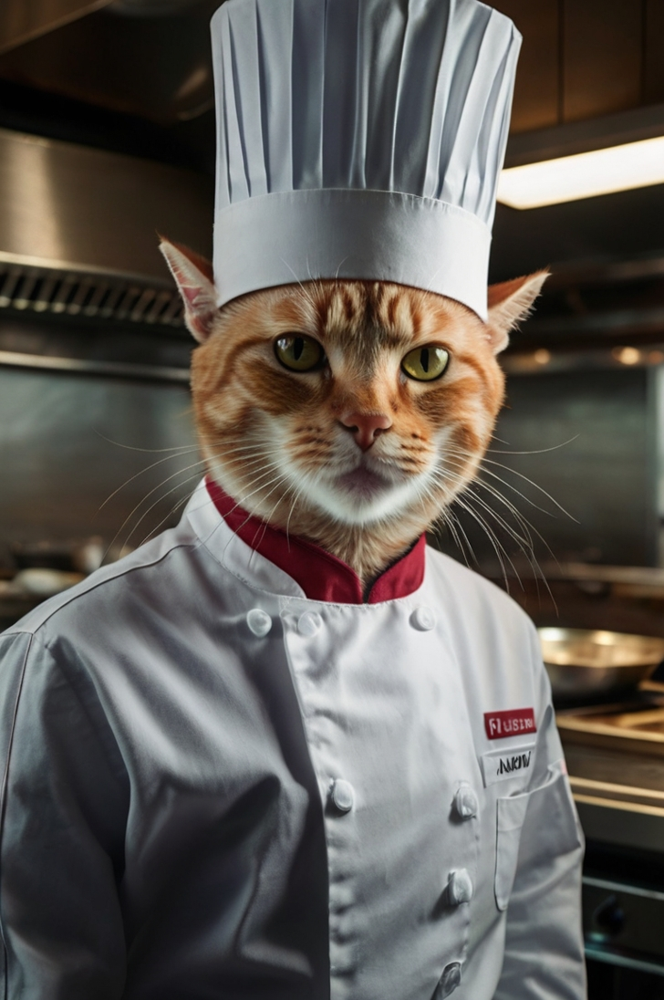
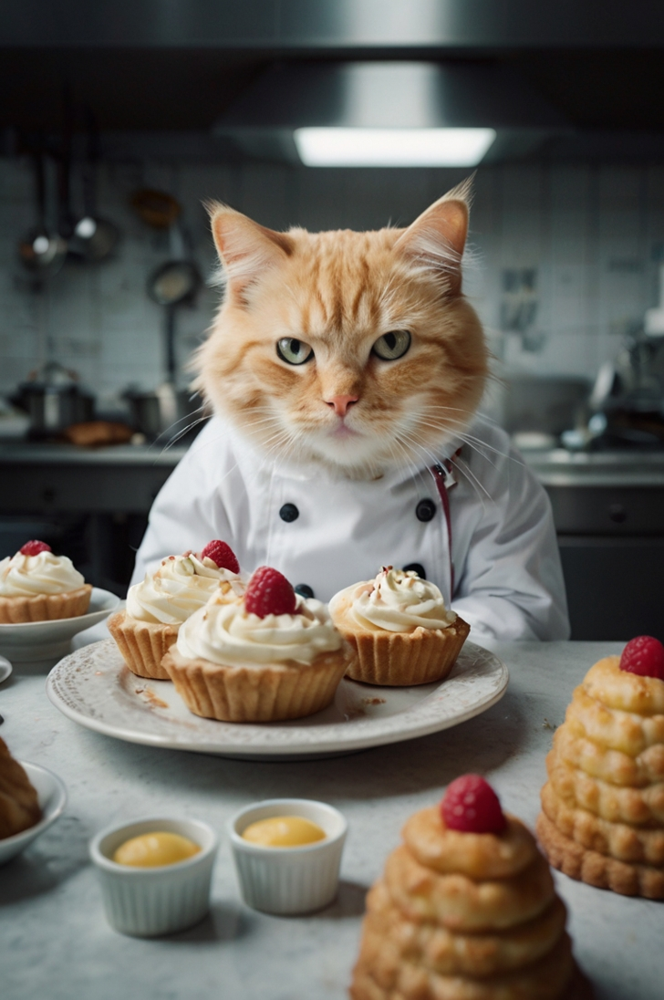
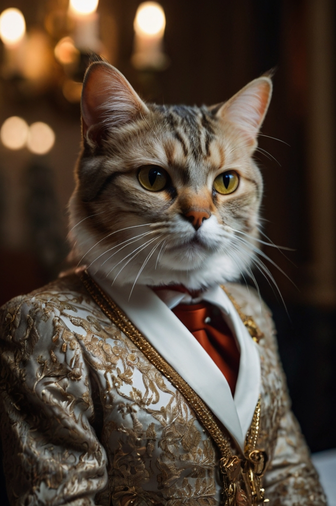
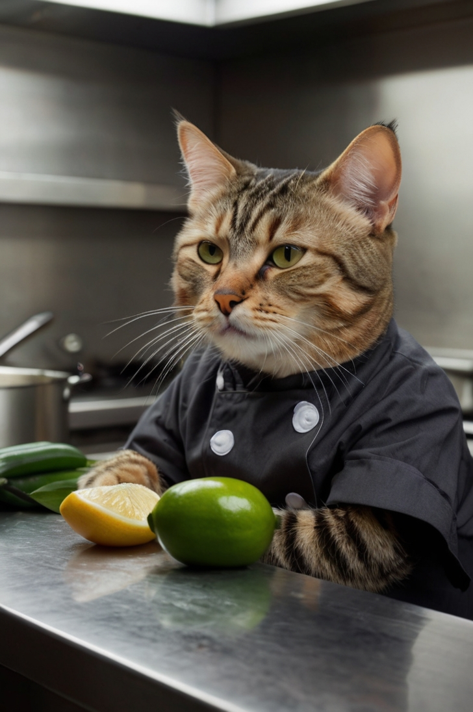

Meet Our Team
CEO: Sir Pounce de Leon

A refined Persian with impeccable taste.
Known for sniffing out only the finest ingredients.
Motto: “If I wouldn’t lick it, we won’t serve it.”
Catering Team A
Head Chef: Whiskerford Ramsay
Fiery temper, but a genius with seafood towers.
Once created a tuna tartare so good it made a dog cry.
Pastry Specialist: Mittens LeFluff
Master of delicate desserts — particularly milk mousse and fish-shaped éclairs.
Known for accidentally sitting in the flour bin.
Event Planner: Clawdia Von Pawsh
The queen of elegance and event logistics.
Ensures every table setting includes a tasteful tuft of fur.
Catering Team B
Head Chef: Nacho the Tabby
Obsessed with fusion cuisine — ever tried sardine tacos?
Occasionally falls asleep in the soup pot.
Grill Master: Sooty McGrillerson

Can char a perfect tuna steak with just a hairdryer and attitude.
Believes grilling is an art form and a way of life.
Server & Entertainer:
Ziggy Whiskerpaws

Performs table-side tricks (like catching shrimp mid-air).
Once accidentally served his own tail instead of a breadstick.